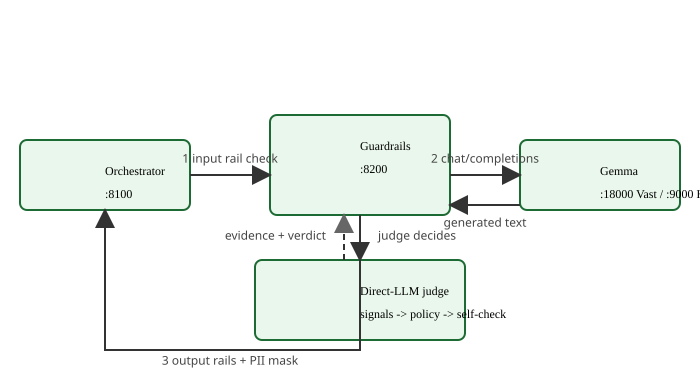
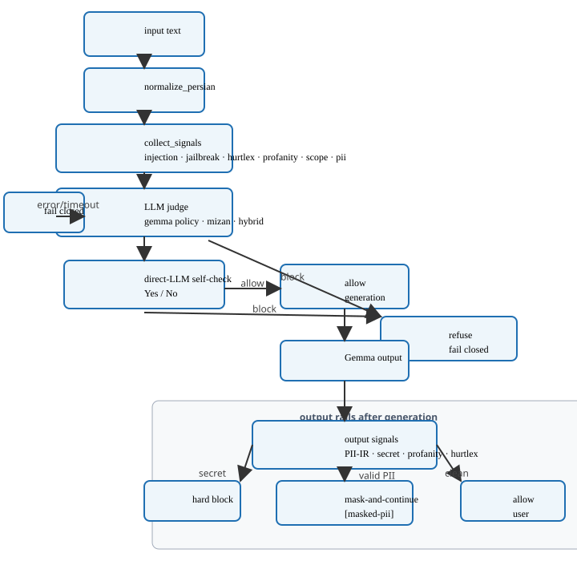
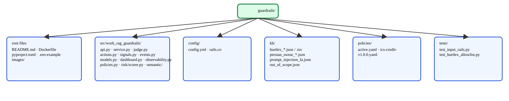

In-Depth Technical Detail
Full mermaid diagrams, detailed pipeline stages, running instructions, verification commands, and changelog.
1. Architecture platform — detailed technical

POST /v1/rails/check
stage=input"] SIG["collect_signals
injection · jailbreak · hate
· offense · scope · pii"] JUDGE["policy judge
gemma · mizan · hybrid"] SELF["direct-LLM self-check
Yes / No
nemoguardrails REMOVED"] FC["fail closed
on error / timeout"] CHAT["POST /v1/chat/completions
OpenAI-compatible guarded Gemma"] GE["Gemma
:18000 Vast / :9000 H200"] OSIG["output rails
PII-IR · secret · profanity · hate"] MASK["mask-and-continue
[masked-pii]"] HB["hard block
(secret)"] ORCH -->|1 input text| CHECK CHECK --> SIG SIG --> JUDGE JUDGE --> SELF SELF -->|allow| CHAT SELF -->|block| FC JUDGE -->|error| FC CHAT --> GE GE -->|raw text| OSIG OSIG -->|secret| HB OSIG -->|valid PII| MASK OSIG -->|clean| ORCH HB -->|refuse| ORCH MASK -->|masked text| ORCH
Diagram source (Mermaid)
flowchart LR
ORCH["Orchestrator :8100"]
GR["Guardrails :8200"]
CHECK["input rail\nPOST /v1/rails/check\nstage=input"]
SIG["collect_signals\ninjection · jailbreak · hate\n· offense · scope · pii"]
JUDGE["policy judge\ngemma · mizan · hybrid"]
SELF["direct-LLM self-check\nYes / No\nnemoguardrails REMOVED"]
FC["fail closed\non error / timeout"]
CHAT["POST /v1/chat/completions\nOpenAI-compatible guarded Gemma"]
GE["Gemma\n:18000 Vast / :9000 H200"]
OSIG["output rails\nPII-IR · secret · profanity · hate"]
MASK["mask-and-continue\n[masked-pii]"]
HB["hard block\n(secret)"]
ORCH -->|1 input text| CHECK
CHECK --> SIG
SIG --> JUDGE
JUDGE --> SELF
SELF -->|allow| CHAT
SELF -->|block| FC
JUDGE -->|error| FC
CHAT --> GE
GE -->|raw text| OSIG
OSIG -->|secret| HB
OSIG -->|valid PII| MASK
OSIG -->|clean| ORCH
HB -->|refuse| ORCH
MASK -->|masked text| ORCHDiagram terms — every element explained
- ORCH — Orchestrator :8100: The Work RAG Orchestrator service that coordinates the request and sends the input text to Guardrails.
- GR — Guardrails :8200: The guardrails service enforcing policy. nemoguardrails/NeMo is removed and not executed.
- CHECK — input rail POST /v1/rails/check stage=input: The entry point where the orchestrator asks Guardrails to check the input text before retrieval.
- SIG — collect_signals: Deterministic detectors emit evidence signals: injection, jailbreak, hate, offense, scope, PII. Evidence only — they do not block directly (except secret downstream).
- JUDGE — policy judge gemma · mizan · hybrid: The LLM-backed policy judge. Backend selected by
GUARD_JUDGE_BACKEND(gemma default, mizan, or hybrid). - SELF — direct-LLM self-check Yes / No nemoguardrails REMOVED: One direct-LLM Yes/No call acting as a second opinion after the policy judge. NeMo self-check flows are gone.
- FC — fail closed on error / timeout: If the judge errors or times out, the request is refused rather than passed through.
- CHAT — POST /v1/chat/completions OpenAI-compatible guarded Gemma: The guarded generation endpoint that calls upstream Gemma and returns an OpenAI-compatible response.
- GE — Gemma :18000 Vast / :9000 H200: The upstream Gemma model, at
:18000on Vast.ai or:9000on the H200 manager. - OSIG — output rails PII-IR · secret · profanity · hate: Deterministic output detectors run on the generated text before it reaches the user.
- MASK — mask-and-continue [masked-pii]: Valid PII is masked in place and the (masked) answer is returned to the user.
- HB — hard block (secret): Secret markers (
sk-,api_key,database_url,Bearer) trigger a hard refusal. - Arrow 1 input text (ORCH → CHECK): Raw input enters the input rail check.
- CHECK → SIG: The input is run through deterministic signal collection.
- SIG → JUDGE: Collected signals are handed to the policy judge as evidence.
- JUDGE → SELF: The judge's verdict goes to the direct-LLM self-check as a second opinion.
- SELF →|allow| CHAT: On allow, generation proceeds to the guarded chat endpoint.
- SELF →|block| FC: On a self-check block, fail closed — refuse.
- JUDGE →|error| FC: On judge error, fail closed — refuse.
- CHAT → GE: Guardrails calls upstream Gemma to generate.
- GE →|raw text| OSIG: Raw generated text is fed into output rails.
- OSIG →|secret| HB: Secret content in output → hard block.
- OSIG →|valid PII| MASK: Valid PII → mask-and-continue.
- OSIG →|clean| ORCH: Clean output → returned to orchestrator/user.
- HB →|refuse| ORCH: Hard block → refusal returned to orchestrator.
- MASK →|masked text| ORCH: Masked text → returned to orchestrator/user.
2. Internal pipeline (adjudicate) — detailed technical

judge -> self-check -> output rails — detailed technical" style="max-width:100%; height:auto;">injection · jailbreak · hurtlex
· profanity · scope · pii] SIG --> DOMAIN[needs_domain_check
out_of_domain signal] DOMAIN --> JUDGE[policy judge
gemma · mizan · hybrid] JUDGE --> SELF[direct-LLM self-check
Yes / No
fail closed on error] SELF -->|allow| ALLOW[allow → generation] SELF -->|block| REF[refuse] JUDGE -->|block| REF subgraph OUTRAILS[output rails after generation] GEN[Gemma output] --> OSIG[output signals
PII-IR · secret · profanity · hate] OSIG -->|secret| HB[hard block] OSIG -->|valid PII| MASK[mask-and-continue [masked-pii]] OSIG -->|clean| OUT[allow → user] end
Diagram source (Mermaid)
flowchart TD
IN[input text] --> NORM[normalize_persian]
NORM --> SIG[collect_signals\ninjection · jailbreak · hurtlex\n· profanity · scope · pii]
SIG --> DOMAIN[needs_domain_check\nout_of_domain signal]
DOMAIN --> JUDGE[policy judge\ngemma · mizan · hybrid]
JUDGE --> SELF[direct-LLM self-check\nYes / No\nfail closed on error]
SELF -->|allow| ALLOW[allow → generation]
SELF -->|block| REF[refuse]
JUDGE -->|block| REF
subgraph OUTRAILS[output rails after generation]
GEN[Gemma output] --> OSIG[output signals\nPII-IR · secret · profanity · hate]
OSIG -->|secret| HB[hard block]
OSIG -->|valid PII| MASK[mask-and-continue [masked-pii]]
OSIG -->|clean| OUT[allow → user]
endDiagram terms — every element explained
- IN — input text: The raw user query entering the pipeline.
- NORM — normalize_persian: Persian normalization: Arabic→Persian char mapping (
ي→ی,ك→ک,ة→ه, alef variants→a), ZWNJ/diacritic/tatweel strip, Persian/Arabic digit→ASCII, whitespace collapse. Identical to KB-manager preprocessing. - SIG — collect_signals injection · jailbreak · hurtlex · profanity · scope · pii: Deterministic detectors emit evidence (not verdicts): prompt injection, jailbreak, HurtLex hate, profanity, out-of-scope, PII.
- DOMAIN — needs_domain_check out_of_domain signal: Fast no-LLM pre-check; long text with zero in-domain keywords earns an
out_of_domainsignal usingdomain_keywords. - JUDGE — policy judge gemma · mizan · hybrid: The LLM policy judge weighing signals against pinned-policy categories. Backend per
GUARD_JUDGE_BACKEND. - SELF — direct-LLM self-check Yes / No fail closed on error: One direct-LLM Yes/No call as a second opinion; fails closed (refuses) on error.
- ALLOW — allow → generation: The input passes all checks; generation proceeds.
- REF — refuse: The request is refused (premade refusal,
finish_reason="content_filter"). - SELF →|block| REF / JUDGE →|block| REF: Either the self-check or the judge can block → refuse.
- OUTRAILS — output rails after generation (subgraph): The output-side safety stage applied to Gemma's generated text before it reaches the user.
- GEN — Gemma output: Raw text produced by the upstream Gemma model.
- OSIG — output signals PII-IR · secret · profanity · hate: Deterministic output detectors: PII-IR (national-id mod-11, Sheba/IR-IBAN mod-97, mobile/landline), secret markers, profanity, HurtLex hate.
- HB — hard block: Secret content in output → hard refusal.
- MASK — mask-and-continue [masked-pii]: Valid PII → masked in place and answer returned.
- OUT — allow → user: Clean output → returned to the user.
3. Code hierarchy — detailed technical

Diagram source (Mermaid)
graph TD
ROOT[guardrails/]
ROOT --> README[README.md]
ROOT --> DOCKER[Dockerfile]
ROOT --> PYPROJ[pyproject.toml]
ROOT --> ENV[.env.example]
ROOT --> IMG[images/]
ROOT --> SRC[src/work_rag_guardrails/]
SRC --> API[api.py]
SRC --> SVC[service.py]
SRC --> JUDGE[judge.py]
SRC --> ACTIONS[actions.py]
SRC --> SIGNALS[signals.py]
SRC --> EVENTS[events.py]
SRC --> MODELS[models.py]
SRC --> DASH[dashboard.py]
SRC --> OBS[observability.py]
SRC --> POLICIES[policies.py]
SRC --> RISK[risk/scorer.py]
SRC --> SEM[semantic/]
SEM --> HATE[hate.py]
SEM --> TOX[toxicity.py]
SEM --> INTENT[intent.py]
ROOT --> CFG[config/]
CFG --> YML[config.yml]
CFG --> CO[rails.co]
ROOT --> KB[kb/]
KB --> HURTLEX[hurtlex_*.json/tsv]
KB --> PERSIAN[persian_swear_*.json]
KB --> INJECTION[prompt_injection_fa.json]
KB --> SCOPE[out_of_scope.json]
ROOT --> POL[policies/]
POL --> ACTIVE[active.yaml]
POL --> ICS[ics-credit-v1.0.0.yaml]
ROOT --> TESTS[tests/]Diagram terms — every element explained
- ROOT — guardrails/: Component root.
- README.md: Component documentation.
- Dockerfile: Container build definition.
- pyproject.toml: Python project metadata and dependencies (
work-rag-guardrails0.1.0, Python >=3.11). - .env.example: Environment variable template.
- images/: Diagram assets.
- SRC — src/work_rag_guardrails/: Python package.
- api.py: FastAPI app (
create_appfactory) exposing/health,/ready,/v1/rails/check,/v1/chat/completions, dashboard routes. - service.py: Pipeline orchestration (adjudicate: signals → judge → self-check → decision).
- judge.py: LLM policy judge (gemma/mizan/hybrid backends).
- actions.py: Rail actions (allow, refuse, mask, hard block).
- signals.py: Deterministic detectors (injection, jailbreak, HurtLex, profanity, scope, PII).
- events.py: Decision event logging (PII masked).
- models.py: Pydantic request/response models.
- dashboard.py: Persian dashboard on
:8200. - observability.py: Observability / masked sample viewer.
- policies.py: Business policy store loading.
- risk/scorer.py: Risk scoring.
- semantic/: Semantic detectors —
hate.py,toxicity.py,intent.py. - CFG — config/: Legacy NeMo configs (
config.yml,rails.co) — not loaded at runtime. - KB — kb/: Safety knowledge base — HurtLex lists, Persian swear lists, prompt-injection patterns (
prompt_injection_fa.json), out-of-scope (out_of_scope.json). - POL — policies/: Versioned business policy prompts —
active.yamlpin +ics-credit-v1.0.0.yaml. - TESTS — tests/: Pytest suite.
4. Pipeline stages — detailed
Input rail check (stage=input)
normalize_persian()— Arabic→Persian char mapping (ي→ی,ك→ک,ة→ه, alef variants→a), ZWNJ/diacritic/tatweel strip, Persian/Arabic digit→ASCII, whitespace collapse (identical to KB-manager preprocessing).collect_signals()— injection, jailbreak, HurtLex hate, profanity, out-of-scope — evidence only.- Domain pre-check (
needs_domain_check) — long text with zero in-domain keywords earns anout_of_domainsignal. - Policy judge (per
GUARD_JUDGE_BACKEND/mode) — pinned-policy categories via LLM;clean-no-signalsskips the judge. - Direct-LLM self-check (one Yes/No call) — tie-break/dissent handling; policy judge overrules a lone self-check block when signals were clean.
- Fail closed on any error or timeout.
Output rail check (stage=output)
- Deterministic signals: profanity, HurtLex hate, PII-IR (national-id mod-11, Sheba/IR-IBAN mod-97, mobile/landline).
secretmarkers (sk-,api_key,database_url,Bearer) — hard block.- Valid PII → mask-and-continue (
[masked-pii]); otherwise answer. - Fail closed on any error or timeout.
Judge modes & backends
GUARD_JUDGE_BACKEND:
- gemma (default) — pinned-policy categories judged by Gemma LLM calls;
VERDICT: allow|block+CATEGORY: <id>parsing; fail closed on unparseable/error. - mizan — Mizan System-1 API (via Manager
:9000) returning safety/scope/severity answers. - hybrid — Mizan first, escalate to Gemma on low confidence or hard signals (
prompt_injection,jailbreak,secret,pii,hate,offense,profanity).
GUARD_JUDGE_MODE:
- on-signal (default): clean texts (no signals) skip the judge entirely.
- always: judge every text.
The direct-LLM self-check (GUARD_NEMO_SELFCHECK) runs after the policy judge as a second opinion; shadow logs only, off skips it.
Classification taxonomy
prompt_injection · jailbreak · hate · offense/profanity · pii · out_of_scope/out-of-domain · secret · policy (business) · engine_error. Reports prefer the deterministic signal category when the judge blocks generically (insult → hate, not out-of-domain).
5. Business policy store (policies/)
Git-backed versioned prompts: policies/<domain>-v<semver>.yaml, enforced version pinned in policies/active.yaml. Current: ics-credit-v1.0.0 (out-of-domain incl. company/people as in-domain; ungrounded-advice). Schema: id/version/stage/categories with prompt ({{text}}/{{signals}}), refusal, examples, plus domain_keywords for the fast no-LLM out-of-domain pre-check. Ship new versions by adding a file + moving the pin — never edit released versions.
6. HurtLex Persian allowlist (28 lemmas)
Allowlisted for both input and output HurtLex checks on exact-word match to prevent false positives on legitimate credit terminology. Profanity/PII/secret remain strict and are not allowlisted. File: kb/hurtlex_allowlist.json.
| Lemma | Domain | Evidence |
|---|---|---|
| حذف | Credit | درخواست حذف سابقه منفی قدیمی |
| بخشی | Credit | بخشی از اطلاعات |
| تأمین مالی | Credit | Core term تسهیلات بانکی |
| اشتغال | Credit | اشتغال و سابقه بیمه |
| پست | Credit | پست سازمانی |
| مصرف | Credit | گزارشهای مصرف |
| هدف | Credit | هدف از دریافت تسهیلات |
| نادرست | Credit | اطلاعات نادرست را اصلاح |
| پستی | Credit | KB chunk, polite greeting |
| مهم | Credit | مهم است flagged on جدول نوع تماس |
| ضعیف | Credit | 6 answers with رتبه ضعیف |
| خسته | Social | خسته نباشید greeting |
| شرح | Credit | شرح = description in reports |
| دسته | Credit | دستهبندی = category |
| جزئی | Credit | جزئی = partial/minor |
| ناشی | Credit | ناشی از = resulting from |
| خوشحال | Social | Positive sentiment |
| سخت | General | سخت = difficult |
| پلیس | Credit | سوابق پلیس credit data source |
| بچه | General | بچه کجاست؟ birthplace — kid/child |
| گروه | Business | گروه/گروهبندی — group |
| مردم | General | مردم — people |
| دختر | General | Girl/daughter |
| خانم | General | Ms./lady title |
| پوست | General | Skin |
| قوم | General | Ethnicity noun (single-word trigger can't see targeting) |
| روستایی | General | Rural demographic term |
| قشر | General | Stratum/class |
7. Running locally
cd components/guardrails
cp .env.example .env
pip install -e ".[dev]"
PYTHONPATH=./src \
GUARDRAILS_HOST=0.0.0.0 GUARDRAILS_PORT=8200 \
UPSTREAM_LLM_BASE_URL=http://127.0.0.1:18000/v1 \
UPSTREAM_LLM_MODEL=unsloth/gemma-4-31B-it-GGUF:UD-Q4_K_XL \
python -m uvicorn work_rag_guardrails.api:create_app --factory --host 0.0.0.0 --port 8200
Or via the console script: guardrails. Or with Docker: docker build -t work-rag-guardrails . && docker run -p 8200:8200 work-rag-guardrails.
Tests
cd components/guardrails
PYTHONPATH=./src python -m pytest tests/ -v
8. Verification
# Health / readiness
curl -s http://127.0.0.1:8200/health
curl -s http://127.0.0.1:8200/ready
# Input allowed (was blocked before allowlist)
curl -s http://127.0.0.1:8200/v1/rails/check -H 'Content-Type: application/json' \
-d '{"stage":"input","text":"درخواست حذف سابقه منفی قدیمی از گزارش اعتباری","request_id":"t"}'
# Output blocked for true hate
curl -s http://127.0.0.1:8200/v1/rails/check -H 'Content-Type: application/json' \
-d '{"stage":"output","text":"این فرد حرامزاده است","request_id":"t"}'
# Dashboard stats
curl -s 'http://127.0.0.1:8200/dashboard/api/stats'
9. Changelog (version summary)
- v2 (current) —
nemoguardrailsremoved. Deterministic signals (signals.py) + direct-LLM judge self-check (judge.py), fail closed.adjudicate()= signals → policy judge (gemma/mizan/hybrid) → self-check → decision.secrethard block; PII mask-and-continue on output. Gemma called directly (:18000Vast /:9000H200). - v1 — NeMo Guardrails (
LLMRails, Colang flows inconfig/rails.co,config/config.yml) as the policy engine with NeMo self-check flows. Retired:nemoguardrailspinned langchain-core internals that conflicted with the stack and failed init on every start.
Links
- Overview
- High-Level Detail
- KB — Persian sources (kb/README.md)
- Business guardrail policies (policies/README.md)
- Parent README